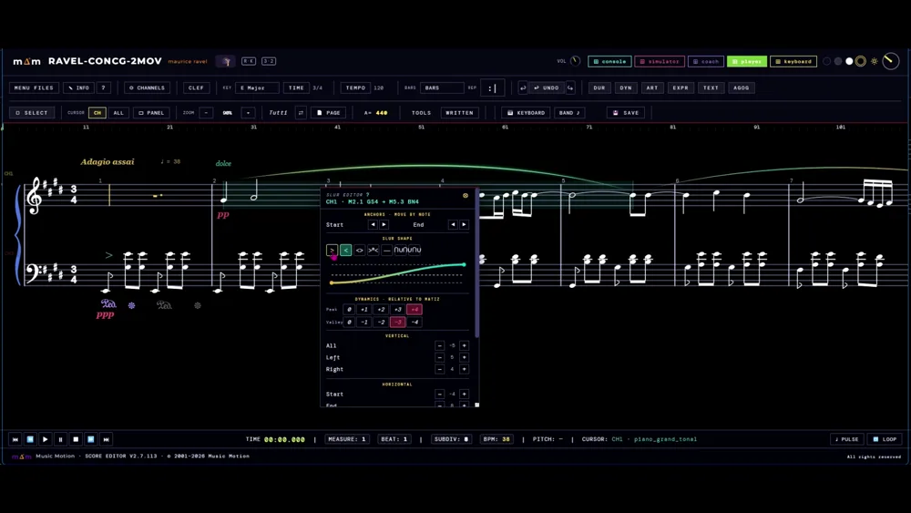
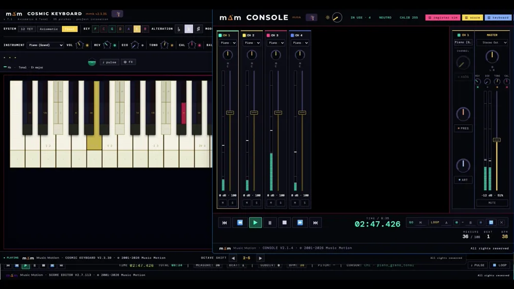
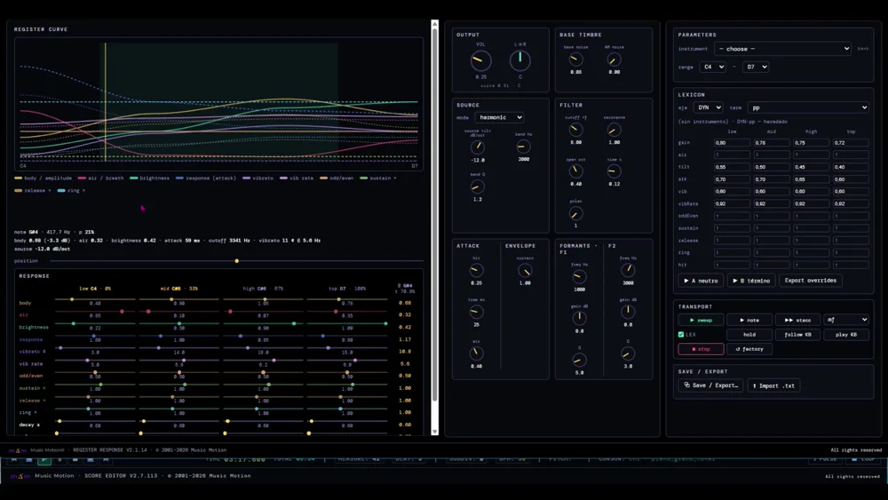
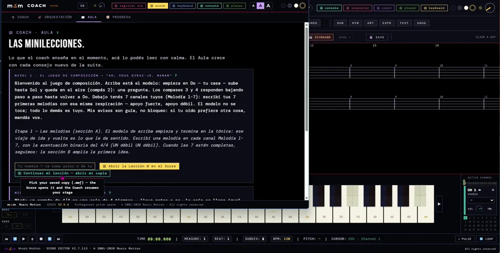

La ScoreSuite — six applications qui s’écoutent entre elles.
Elles fonctionnent dans le navigateur et partagent une même base : l’accord pythagoricien pur, à partir de rapports de 2 et de 3, sans les arrondis du tempérament égal. Ce qui est joué dans l’une, les autres le reçoivent aussitôt : le clavier le fait sonner, la partition l’écrit et la console l’équilibre.
mm-sync Les applications se connectent par un canal partagé : jouez dans l’une et les autres répondent. Elles fonctionnent dans le navigateur, partout où il y a une connexion internet — sur ordinateur, tablette ou téléphone, sans rien installer.
Ce que la suite vous apporte
Un instrument, un éditeur de partitions et une console d’orchestre — rien à installer, et aucun équipement en dehors de l’ordinateur que vous avez déjà.
Partout, sur tout appareil
Elle fonctionne dans le navigateur depuis musicmotionsuite.com : rien à installer, aucun compte pour commencer. En classe, à la maison ou en voyage — ordinateur, tablette ou téléphone —, la suite est toujours disponible avec une simple connexion.
Un instrument à la portée de tous
Le clavier QWERTY de l’ordinateur est l’instrument. En mode Tonal, chaque degré se trouve toujours à la même position, dans n’importe quelle tonalité ; en mode Axiomatic, les positions sont celles du clavier standard.
Vous entendez ce que vous écrivez
Les notes s’entrent à la souris ou depuis le Score Keyboard, directement sur la portée active, et la musique éditée sonne aussitôt : il n’y a rien à exporter pour l’entendre.
32 canaux d’instruments
Trente-deux canaux indépendants pour répartir le travail entre différents instruments, du duo à la formation complète, chacun avec son timbre et son registre.
Travailler avec l’orchestre derrière vous
La Console coupe ou isole le canal nécessaire : l’instrumentiste étudie sa partie avec l’accompagnement. La séance s’enregistre en WAV et s’envoie aux élèves ou aux professeurs.
Quatre formats d’export
Chaque œuvre s’exporte en MMF — le format natif, avec l’identité pythagoricienne exacte de chaque note —, XML, WAV et MID, selon qu’il s’agit de l’archiver, de l’ouvrir dans un autre programme ou de la partager en audio.
Votre bibliothèque MIDI, modifiable
Un fichier .MID est converti en MMF et s’ouvre dans le Score pour être modifié. Ce qui arrive tempéré prend, note par note, sa hauteur pythagoricienne.
Des partitions sur papier ou en PDF
La partition s’imprime sur papier ou en PDF, et les parties séparées par instrument s’extraient en choisissant les canaux dans le panneau : elles sortent mises en page comme la partition.
Des exercices écrits par le professeur
Dans les écoles de musique et les conservatoires, les professeurs écrivent leurs propres exercices — pratique instrumentale, ou harmonie, contrepoint et composition — et les élèves les travaillent de façon interactive, en les entendant dans l’intonation la plus naturelle.
Un outil par rôle
Chaque application fait bien une chose ; ensemble, elles forment l’instrument.

Le moteur sonore
Le cœur : la seule application qui produit le son de toute la suite. Chaque touche est divisée — la hauteur pythagoricienne pure en haut, une bande au tempérament égal (12-TET) en bas, pour comparer.
- Systèmes : Axiomatic (pythagoricien), 12-TET et Tonal (par degrés)
- ↑/↓ infléchissent la note tenue d’un apotome (limité à ♯♯/♭♭)
- Rangée HiFi : réverbération · timbre · chaleur · balance G/D

La partition
Vous écrivez la musique par canaux. Son mini-clavier en mode TODAL vous permet de jouer par degrés de la gamme (en Fa majeur, le degré IV sonne Si♭, automatiquement).
Elle s’imprime sur papier ou en PDF, et extrait les parties séparées par instrument : choisissez les canaux dans le panneau et le bouton PRINT VIEW les ouvre mises en page comme la partition.
- Résolution diatonique selon l’armure, étiquettes de degrés dorées
- Bouton Mode : WRITE → TODAL PLAY → TODAL WRITE
- Choisissez la tonique et l’armure se place d’elle-même

La table de mixage
L’équilibre entre les instruments de la partition : volume et coupure par canal, plus le volume général partagé par toute la suite.
- Faders par canal + master
- Transport de lecture (lecture/pause/arrêt)

Réponse des registres
Explorez comment chaque registre de l’instrument répond sur toute l’étendue du clavier.
- Banc d’essai des timbres et des registres

Le copiste
Charge le MIDI et le convertit en MMF — le format natif, avec l’identité pythagoricienne exacte de chaque note. C’est le transport principal de la suite ; il sonne à travers le Cosmic.
- MIDI → MMF organisé selon l’armure du fichier
- Score Intelligence : identifie l’œuvre et ses tempos (avec Claude)

Le conseiller
Il écoute la suite en silence et se manifeste quand il le faut. Et désormais il enseigne aussi : il conduit le jeu de composition, où vous partez d’une mélodie modèle pour aboutir à une pièce à quatre voix écrite par vous, sans avoir étudié la théorie.
- 🎓 dans les 4 applications : un clic le réveille ou l’endort — jamais imposé
- Niveau 1 terminé : six étapes, de la mélodie au quatuor, et une ★ à la fin
- Il signale les sauts difficiles et les quintes parallèles — des avertissements, jamais des blocages
- Solfège de base, technique (il surveille les applications) et styles (baroque, classique…)
- La pulsation rythmique : battement visible + tap-tempo
De zéro au premier son
Servez la suite depuis un seul localhost
Les applications communiquent par mm-sync, qui exige une origine commune. Ouvrir les fichiers par double-clic (file://) isole les fenêtres et rompt le lien.
Ouvrez le trio de travail
Cosmic Keyboard, Score et Console. Les boutons de navigation de chaque application ouvrent les autres et restent allumés tant qu’elles sont ouvertes.
Trouvez votre « maison »
Jouez sur le Keyboard jusqu’à ce qu’une note vous semble être le centre. Choisissez cette tonique : le Score écrit l’armure de lui-même et il est prêt pour composer par degrés.
Ajoutez de l’espace et de la couleur
Sur le Keyboard, la rangée HiFi (réverbération, timbre, chaleur) donne de l’air et du corps à l’ensemble. Elle n’agit que sur la sortie — elle ne touche jamais à l’accord.
Chaque sujet, à votre niveau
Choisissez Pour commencer (sans théorie) ou Pour les musiciens (avec le détail technique). Cela grandit avec la suite.
Le jeu de composition — Niveau 1
Un seul fichier qui grandit. Une mélodie modèle reste en haut, verrouillée, et vous écrivez la vôtre en dessous. Quand vous terminez une étape, l’œuvre s’agrandit d’elle-même vers la partie suivante : d’abord les mélodies, puis la section B, la partie C, la basse, la voix intérieure et le ténor. À la fin, vous avez une pièce à quatre voix que vous avez écrite vous-même, et le Coach vous signe d’une ★. Elle se joue depuis sa fenêtre ; la progression voyage à l’intérieur du fichier, vous enregistrez donc et revenez quand vous voulez. Voir le détail →
forme A·B·C · contrepoint · SATB
Construit sur Ah! vous dirai-je, maman — le thème que Mozart a varié dans le K.265. La partition compte 32 canaux en 8 blocs de 4 : mélodie, 2e, 3e et basse. Les étapes 1 à 3 construisent la forme A·B·C avec des règles mélodiques sous forme d’avertissements (triton, septième, rattrapage du saut, début et fin sur la tonique) ; B est volontairement laissé sans cadence. À partir de l’étape 4 entre le moteur vertical : parallèles, mouvement direct et croisement, d’abord contre la basse en clé de fa — à laquelle les règles de saut ne s’appliquent pas —, puis avec la 2e voix et le ténor, jusqu’à ce que chaque bloc se referme en SATB. Un niveau est un paquet de données, pas du code : les niveaux 2 à 7 se construisent avec la même recette.
Les deux maisons : la tonique et la pulsation
En musique, il y a deux endroits où l’on « revient à la maison ». L’un est une note — votre maison mélodique. L’autre est un battement régulier — votre maison dans le temps. Vous n’avez pas besoin de connaître leurs noms : vous les trouvez en jouant, quand quelque chose vous semble être le centre.
tonique · pulsation
La tonique est le degré I de la gamme, le centre du champ des hauteurs ; la pulsation est l’unité de temps. Le Keyboard permet de trouver la tonique à l’oreille et la propage à la suite (l’armure du Score suit). La pulsation se règle par tap-tempo et c’est la grille par rapport à laquelle on mesure ensuite le rythme.
La mesure est toujours complète
Une mesure à 4/4 est une boîte de 4 temps : avec ou sans notes, la boîte se remplit toujours. Ce qui ne sonne pas s’écrit en silences — chaque valeur de note a un silence jumeau de même durée exacte. Si votre note entre sur le 2e temps, le 1er temps est occupé par un silence : comptez-le comme s’il sonnait (un…) et vous entrerez juste à temps. Le Score le montre en direct : déposez une note après le début et les silences apparaissent d’eux-mêmes, avec le Coach qui vous explique pourquoi.
mesure · silences
La somme des durées d’une mesure est invariable : notes et silences complètent toujours la valeur de la métrique. Quand vous faites glisser une valeur à une position située après le contenu existant, le Score remplit le vide de silences par ordre décroissant (blanche → noire → croche…), alignés sur les temps, dans la même annulation. L’événement passe par le bus (COACH · rest-fill) et le Coach affiche le message compact et la mini-leçon. Les entrées à contretemps et les anacrouses internes s’écrivent avec une grammaire correcte dès le tout premier geste.
Pythagoricien ou tempéré
Le piano que vous connaissez est « arrondi » pour que tout s’emboîte de façon égale. Music Motion utilise un accord naturel, issu de rapports simples, qui sonne plus net. La différence est subtile sur des notes isolées et se révèle dans les accords. Sur chaque touche, vous pouvez comparer : le naturel en haut, l’« arrondi » en bas (la bande colorée).
Comma pythagoricien
Le tempérament égal répartit le comma pythagoricien (3¹²/2¹⁹) en douze parts pour refermer le cycle des quintes. En pythagoricien, les quintes sont pures (3:2) et la tierce majeure est large (81/64 = 407,8 ¢ contre 400 ¢). Ancrées sur le même La, les notes naturelles s’écartent du tempéré de −8 à +4 ¢ ; le contraste se trouve dans les tierces et les accords, pas dans les notes isolées. La bande tempérée (12-TET) de chaque touche est la couche de comparaison.
Hausser et baisser une note — et sa limite
Pendant que vous tenez une note, les flèches ↑/↓ la haussent ou la baissent d’un cran (un « dièse » ou un « bémol »). Vous pouvez le faire jusqu’à deux fois ; si vous allez plus loin, le Coach vous dit que vous avez atteint la limite. La touche allumée se déplace pour montrer sur quelle note vous êtes.
apotome · ♯♯/♭♭
↑/↓ appliquent un apotome (2187/2048 = 3⁷/2¹¹) à la note tenue, en direct, sans réattaque. La limite est absolue à ♯♯ et ♭♭ (indices −2..+2) : par exemple, depuis Fa♯, un ↑ donne Fa𝄪 ; le suivant est bloqué et le Coach affiche « 2 altérations — limite ». L’éclairage suit l’inflexion (♮→♯→𝄪 / ♮→♭→𝄫). Tout en facteurs de 2 et de 3 — sans cents.